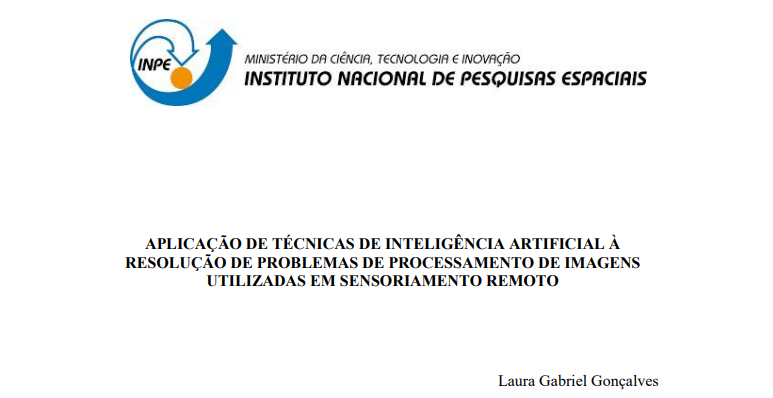
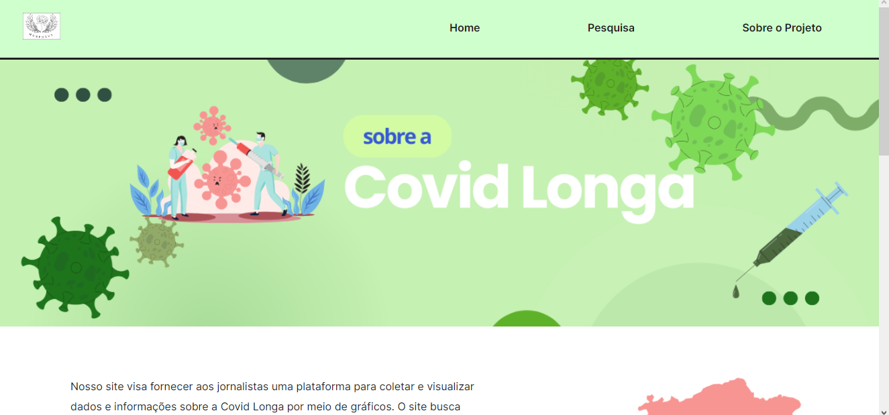
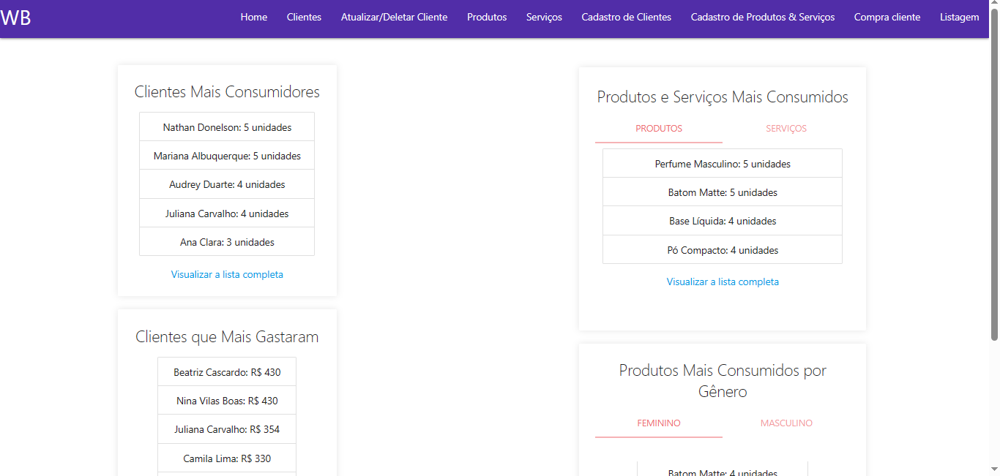

Meus Projetos

Iniciação Tecnológica (INPE)
Pesquisa aplicada ao uso de técnicas de IA no processamento de imagens de satélite para detecção de incêndios florestais.

UNES
Site educacional com recursos interativos desenvolvido para a aula de Desenvolvimento Web I.

Portfólio Design Digital
Coleção pessoal de trabalhos desenvolvida para a aula de Design Digital.

Projeto Integrador 1° Semestre
Site desenvolvido em equipe sobre Covid Longa para um cliente da Rede Vanguarda.

Gerenciador de Músicas
CRUD desenvolvido para aula de Desenvolvimento Web II com funcionalidades completas.

World Beauty
Site para empresa fictícia desenvolvido em dupla para Técnicas de Programação I.